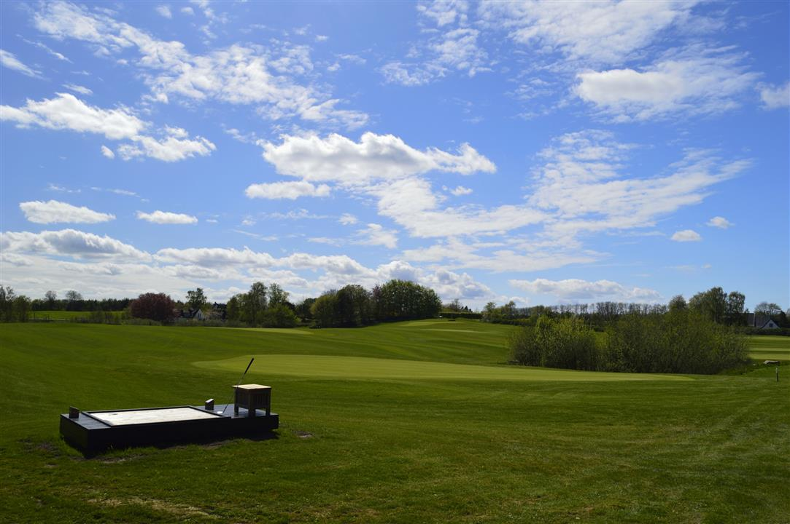

<div class="pages">
  <div data-page="ordensregler" class="page navbar-fixed toolbar-fixed" >
    <div class="navbar">
      <div class="navbar-inner">
        <div class="left">
          <a href="#" class="link back icon-only"><i class="icon icon-back"></i></a>
          <!-- <a href="#" class="back link icon-only"><i class="icon icon-back"></i></a> -->
        </div>
        <div class="center">Ordensregler</div>
        <!-- <div class="right"></div> -->
        <div class="right">
        </div>
      </div>
    </div>
    <div class="page-content" style="padding-top:45px;">
       <div class="content-block">
          <p>Ordensregler</p>
          <p>Når du spiller på Lærkeager banen kræver vi at du overholder følgende regler:</p>
          <p>Hver spiller skal have enten gyldigt bagmærke fra Hornbæk Golfklub eller dokumentation for betalt greenfee placeret på sin golfbag<br />
          • Hver spiller skal have egen bag og pitchfork<br />
          • Du skal spille hullerne i rækkefølge<br />
          • Du skal lukke igennem, hvis du bliver indhentet. Kun hvis du selv går i kø og venter, gælder dette ikke.<br />
          • Du må ikke slå hvis der er risiko for at ramme andre<br />
          • Gå ikke foran en spiller der skal slå og duk dig hvis der råbes ”FORE”.<br />
          • Læs altid opslag på og ved banen<br />
          • Du skal rette dig efter henstillinger fra klubbens personale og frivillige – de har altid ret<br />
          • Vis hensyn til banen og ret nedslagsmærker op. Der, hvor bolden slår ned, bliver jorden komprimeret og det ødelægger græssets vækstmiljø, hvis ikke du reparerer hullet<br />
          • eskyt greens og forgreens da det er de steder er dyrest at etablere. Undlad derfor at trække vognen over greens og forgreen også selvom det er en lille omvej.<br />
          • Læg græstørv på plads. Hold naturen ren og benyt de affaldsspande, der er placeret rundt omkring. Bemærk de små kopper på teestederne er kun til brækkede tees. Ikke til affald. Tag affaldet med i bag'en til næste skraldespand</p>
          
        </div>
    </div>
    </div>
    </div>
  </div>
</div>
